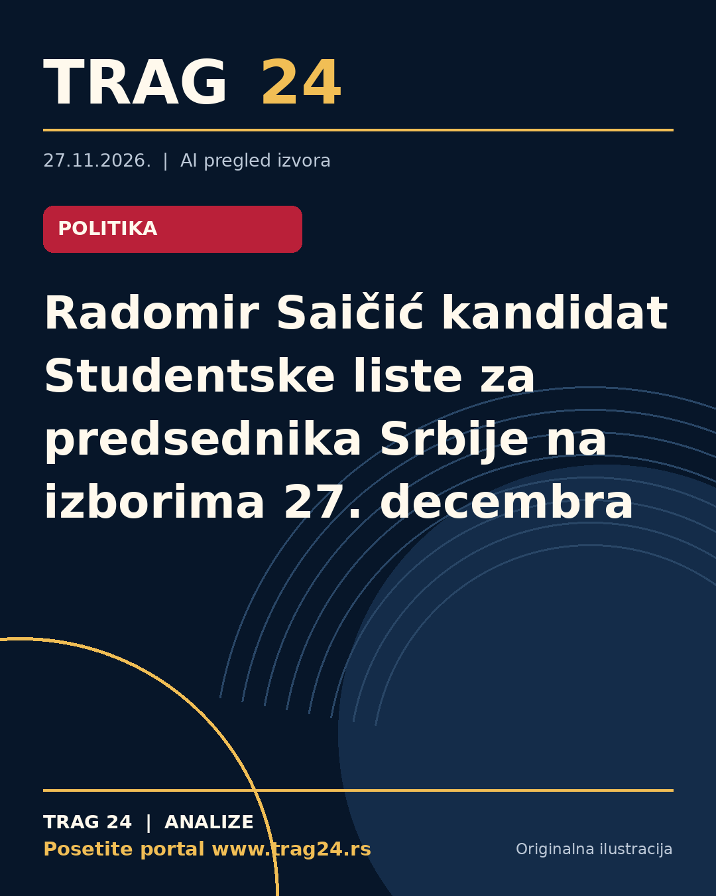

Radomir Saičić kandidat Studentske liste za predsednika Srbije na izborima 27. decembra

ŠTA SE DOGODILO
Radomir Saičić, redovni član Srpske akademije nauka i umetnosti i profesor Hemijskog fakulteta u Beogradu, zvanično je kandidat Studentske liste na predsedničkim izborima u Srbiji, koji će biti održani 27. decembra. Kandidaturu je potvrdio sam Studentski pokret tokom konferencije za medije, istakavši da je Saičić osoba koja svakodnevno podržava njihove principe i vrednosti. Saičić je dosada bio i narodni poslanik iz reda Studentske liste.
HRONOLOGIJA
Saičić je tokom studentskih protesta javno kritikovao policijske postupke i u junu 2025. potpisao peticiju za ostavku predsednika Srbije. Na parlamentarnim izborima 25. oktobra 2026. godine bio je na 91. mestu liste 'Studenti pobeđuju' i nakon izbora postao narodni poslanik. Mandat mu je formalno potvrđen 17. novembra, a potom je izabran za član različitih skupštinskih odbora. Izbori za predsednika Republike Srbije raspisani su 26. novembra, a Saičić je predstavljen kao kandidat studentskog pokreta 27. novembra.
ŠTA NAVODE IZVORI
Izvor iz Studentske liste navodi da je kandidatura Saičića potvrda dugogodišnje saradnje i zajedničkih vrednosti sa pokretom, uz obećanje otvorene i poštene kampanje. Saičić je izjavio da je cilj promene sistema vrednosti i vraćanje dostojanstva funkciji predsednika. N1 ističe da je Saičić narodni poslanik i jedan od osnivača Studentske liste. Vreme prenosi i detalje sa konferencije za medije i poziva Aleksandra Čupića, predsednika Narodne skupštine i vršioca dužnosti predsednika Srbije, da građani izađu na birališta.
ŠTA JE POTVRĐENO
Potvrđeno je da je Radomir Saičić kandidat Studentske liste za predsednika Republike Srbije na izborima 27. decembra 2026. godine. Takođe je potvrđeno da je on redovni član SANU i profesor Hemijskog fakulteta, kao i da obavlja poslaničke funkcije u Narodnoj skupštini. Izbori su raspisani po odluci predsednika Narodne skupštine, a Studentska lista je zakazala kandidaturu u skladu sa propisima.
ŠTA NIJE POTVRĐENO
Nema potvrde o podršci drugih političkih stranaka ili koalicija Saičićevoj kandidaturi. Takođe, nisu potvrđene bilo kakve detaljne informacije o programskim aspektima kampanje osim opštih izjava o principima i vrednostima. Nije potvrđeno ni kako će se odvijati izborna trka sa drugim kandidatima, niti šta će se desiti u eventualnom drugom krugu glasanja.
ŠTA OSTАJE OTVORENO: Ostaje da se vidi kakav će imati izborni rezultat Radomir Saičić na predsedničkim izborima i kako će se kampanja Studentske liste odvijati u poređenju sa ostalim kandidatima. Takođe ostaje otvoreno pitanje uticaja njegove kandidature na političku scenu i mogući položaj Studentske liste u budućoj vlasti Srbije. Nije poznato ni kako će se rasporediti glasovi u slučaju da nijedan kandidat ne osvoji većinu u prvom krugu.
Izvori
- https://www.nedeljnik.rs/studenti-potvrdili-radomir-saicic-je-kandidat-studentske-liste-za-predsednika-srbije/
- https://n1info.rs/vesti/akademik-radomir-saicic-kandidat-studentskog-pokreta-za-predsednika-srbije/
- https://vreme.com/vesti/kakndidat-studenske-liste-za-predsednika-srbije-je-radomir-saicic/
Ova analiza je pripremljena uz pomoć veštačke inteligencije na osnovu javno dostupnih izvora. Navodi izvora nisu nužno nezavisno potvrđeni.